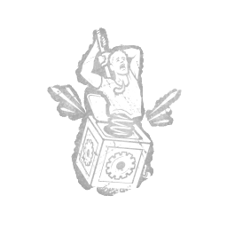

黄鼠狼之跃 Pop Goes the Weasel
所属：小丑（杀手）
| 等级 | 档位 1 | 档位 2 | 档位 3 |
|---|---|---|---|
| 数值 | 35 1 | 40 | 45 |
描述
与恶灵的深厚羁绊会释放出强大的力量。钩住一名逃生者后，爆发鸡生效，持续35/40/45秒。生效期间，手动破坏发电机时，回退量增加+15%，最终造成20%的回退。爆发鸡在使用后或计时器结束前失效。

所属：小丑（杀手）
| 等级 | 档位 1 | 档位 2 | 档位 3 |
|---|---|---|---|
| 数值 | 35 1 | 40 | 45 |
与恶灵的深厚羁绊会释放出强大的力量。钩住一名逃生者后，爆发鸡生效，持续35/40/45秒。生效期间，手动破坏发电机时，回退量增加+15%，最终造成20%的回退。爆发鸡在使用后或计时器结束前失效。